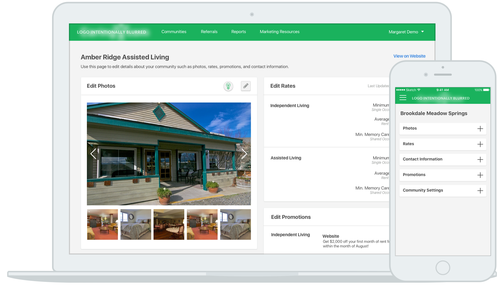
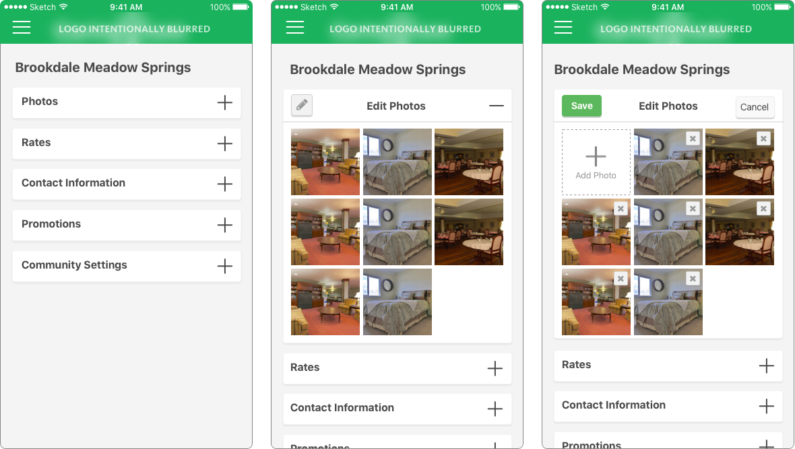

04 CONTACT
Say Hello
Have a cool project? Want to get in contact or just want to say hello? Drop me a line.
Partner portal is a product that connects us to our partners, and our partners to our consumers. Through portal, partners can update their community information, report move ins, and manage their referrals. For more context about designing for seniors and the senior care industry, start here.
The great thing about developing a modular layout for desktop was that it made the design easily responsive.
I minimized each module so that the user wouldn't have to scroll endlessly to find the section that they wanted. It added an extra click, but was important in allowing the user to see all available options ATF.
When the Portal project first came to conception I tried to put every feature from desktop on mobile. But this was a waste of time and money since not a lot of people actually used those features. Furthermore, people who did use those features tended to make more mistakes because of this unfamiliarity with mobile and the smaller screen space.
We realized we needed to pare mobile down to the absolute essentials and focus effort on the features that were most valuable for mobile users. The first step to this, was treating mobile users as different from desktop users.
Desktop users had a different heirarchy of features that they thought were most important. They were:
Mobile users thought these were the most important features:
Now that we had a "separate user" we could reframe our focus on what mattered most. We made sure the mobile experience for referrals and editing community details was perfect and left out other features like marketing resources, performance reports, and user onboarding.
View on BehanceHave a cool project? Want to get in contact or just want to say hello? Drop me a line.